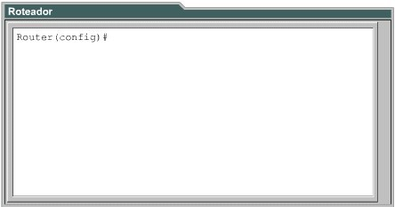

CCNA 2
A Finalidade do Software Cisco IOS
Um roteador ou switch não pode funcionar sem um sistema operacional.
A Cisco chama seu sistema operacional de Internetwork Operating System (Sistema Operacional de Interconexão de Redes) ou IOS.
O Cisco IOS oferece os seguintes serviços de rede:
- Funções básicas de roteamento e comutação;
- Acesso confiável e seguro aos recursos da rede;
- Escalabilidade.
Interface do Usuário do Roteador
O software Cisco IOS usa uma interface de linha de comando interface de linha de comando (CLI).
Essa interface pode ser acessada através de diversos métodos. Uma maneira de acessar a CLI é através de uma sessão de console.
Outra maneira de acessar uma sessão da CLI é usando uma conexão discada (dial-up) através de um modem ou de um cabo nullmodem conectado à porta AUX do roteador.
Outro método para acessar uma sessão CLI é conectar-se via Telnet ao roteador.
Modos da Interface do Usuário
A interface de linha de comando (CLI) da Cisco exige a entrada em diferentes modos para realizar as tarefas.
O IOS fornece um serviço de interpretação de comandos conhecido como executivo de comandos (EXEC), que faz com que cada comando inserido seja validado e executado pelo EXEC.
O Cisco IOS separa as sessões EXEC em dois níveis de acesso: modo EXEC de usuário e modo EXEC privilegiado ( modo de ativação ).
O modo EXEC de usuário permite uma quantidade limitada de comandos básicos de monitoramento e pode ser identificado pelo prompt ">".
O modo EXEC privilegiado permite acesso a todos os modos do roteador e permite a visualização de informações. Pode ser identificado pelo prompt "#".
Para acessar o nível EXEC privilegiado a partir do nível EXEC de usuário, digite o comando enable no prompt ">".
Inserir um ponto de interrogação (?) no modo EXEC privilegiado revela todas as opções de comandos, além das disponíveis no modo EXEC de usuário.
Características do Software Cisco IOS
Embora existam muitas imagens de IOS para diferentes modelos de dispositivos e conjuntos de recursos da Cisco, a estrutura básica dos comandos de configuração é a mesma.A convenção de nomes para as diferentes versões do Cisco IOS contém três partes:
- A plataforma na qual a imagem é executada;
- Os recursos especiais suportados pela imagem;
- Onde a imagem é executada e se ela foi zipada ou compactada.
Quanto mais nova a versão do IOS e quanto mais recursos ela oferecer, mais memória será necessária.
Antes de instalar uma nova imagem do software Cisco IOS no roteador, verifique se este atende às exigências de memória para essa imagem.
Para encontrar a quantidade de memória flash, use o comando show flash.
Para ver a quantidade de RAM, use o comando show version.
Operando o Software Cisco IOS
Os dispositivos que utilizam o IOS Cisco têm três modos operacionais:
- ROM Monitor: realiza o processo inicial de inicialização (bootstrap), oferece ao usuário um conjunto de comandos para operação de baixo nível e para diagnóstico do equipamento, permite a correção de falhas do sistema e recuperação de senhas perdidas. Só pode ser acessado via console;
- Boot ROM: disponibiliza um subconjunto limitado dos recursos do Cisco IOS, permite operações de gravação na memória flash;
- Cisco IOS: em alguns dispositivos, o IOS é executado a partir da flash, mas a maioria dos roteadores Cisco requer que uma cópia do IOS seja carregada e executada a partir da RAM. Operando o Software Cisco IOS.
O valor definido no configuration register (registrador de configuração) é usado para controlar o modo como o roteador será inicializado.
O comando copy tftp flash copia uma imagem do IOS armazenada em um servidor TFTP para a memória flash do roteador.
O comando show version permite a visualização da imagem e versão do IOS que está sendo executado e indica como o configuration register está definido.
Já o comando show flash é usado para verificar se o sistema tem memória suficiente para carregar uma nova imagem do Cisco IOS.
Inicialização do Roteador
As rotinas de inicialização devem realizar as seguintes tarefas:- Certificar-se de que o hardware do roteador foi testado e está funcional;
- Encontrar e carregar o software Cisco IOS;
- Encontrar e aplicar o arquivo de configuração armazenado (startup configuration) ou entrar no modo Setup.
- Definir o tamanho do buffer do histórico de comandos;
- Relembrar comandos;
- Desativar o recurso de histórico de comandos.
- Versão da Bootstrap ROM;
- Versão da Boot ROM;
- Tempo decorrido desde a inicialização do roteador;
- Método utilizado na última reinicialização do roteador;
- Arquivo da imagem do sistema em uso e sua localização;
- Plataforma de hardware do roteador;
- Valor do configuration register.
Modo Setup
A finalidade do modo Setup é permitir uma configuração mínima para um roteador que não seja capaz de localizar uma configuração a partir de outra fonte.
Pressionando Ctrl-C encerra-se o processo de configuração do modo Setup. LEDs
Os roteadores Cisco utilizam LEDs para fornecer informações sobre seu estado operacional.
Um LED desligado quando a interface está ativa e conectada corretamente, indica um problema.
Uma interface muito ocupada, estará sempre com o LED aceso.
O LED verde de OK à direita da porta AUX aceso, indica que o sistema foi inicializado corretamente.
Examinando a Inicialização do Roteador
Na inicialização do roteador, o usuário pode determinar as versões do bootstrap e do IOS, assim como o modelo do roteador, o processador, a quantidade de memória, a quantidade de interfaces, os tipos de interfaces, a quantidade de NVRAM e a quantidade de memória flash.
O valor padrão de fábrica do configuration register é 0x2102, que indica que o roteador deve tentar carregar uma imagem do Cisco IOS a partir da memória flash.
NVRAM invalid, possibly due to write erase (NVRAM inválida, possivelmente devido a ter sido apagada pelo comando write erase), indica ao usuário que o roteador ainda não foi configurado ou que a NVRAM foi apagada.
Estabelecendo uma Sessão de Console
Todos os roteadores Cisco contêm uma porta de console serial assíncrona (RJ-45) TIA/EIA-232.
Um terminal de console pode ser um terminal ASCII ou um PC que esteja executando um software de emulação de terminal, como o HyperTerminal.
Para conectar um PC que esteja executando um software de emulação de terminal à porta de console, use o cabo rollover RJ-45/RJ-45 com o adaptador fêmea RJ-45/DB-9.
Os parâmetros padrão para a porta de console são: 9600 baud, 8 bits de dados, sem paridade, 1 bit de parada, sem controle de fluxo.
Efetuando o Login no Roteador
Após efetuar o login em um roteador, é exibido o prompt do modo EXEC de usuário: >.
Enable permite o acesso ao modo EXEC privilegiado.
No prompt password: digita-se a senha que foi definida com o comando enable secret.
Dois comandos são usados para definir uma senha de acesso ao modo EXEC privilegiado: enable password e enable secret.
Se os dois comandos forem usados, enable secret tem precedência.
Efetuando o Login no Roteador
Concluídas as etapas de login, o prompt muda para #, (modo EXEC privilegiado).
O modo Setup global permite alteração e efetivação de configurações, além de permitir ao usuário acessar outros submodos como: Interface, Subinterface, Line, Router e Route map.
Os comandos disable ou exit permitem o retorno ao modo EXEC de usuário a partir do modo EXEC privilegiado.
Os comandos exit ou Ctrl-Z permitem o retorno ao modo EXEC privilegiado a partir do modo Setup global.
Ctrl-Z também pode ser usado para voltar diretamente ao modo EXEC privilegiado a partir de qualquer submodo da configuração global.
Ajuda do Teclado na CLI do Roteador
Ao digitar um ponto de interrogação (?) no prompt do modo EXEC de usuário ou no prompt do modo EXEC privilegiado é exibida uma lista útil dos comandos disponíveis.
O prompt --More-- na parte inferior da tela indica que há várias telas disponíveis como saída. A próxima tela disponível pode ser visualizada pressionando-se a barra de espaço. Para exibir apenas a linha seguinte, pressiona-se a tecla Enter.
Se um usuário quiser ajustar o clock do roteador mas não souber o comando necessário, pode usar a função de ajuda para verificar o comando correto.
Modo de Edição Avançado
A interface do usuário inclui um modo de edição avançado, que oferece um conjunto de funções de teclas de edição, que permitem que o usuário edite uma linha de comando durante a digitação.
O modo de edição avançado está ativado automaticamente na versão atual do software, mas pode ser desativado por meio do comando terminal no editing no prompt do modo EXEC privilegiado.
Histórico de Comandos do Roteador
A interface do usuário oferece um histórico ou registro dos comandos que foram inseridos, tornando possível a realização das seguintes tarefas:
O histórico de comandos é ativado por padrão, registra dez linhas. A quantidade máxima de comandos é 256.
Solucionando Erros
Os erros de linha de comando ocorrem principalmente devido a erros de digitação.
Se a palavra-chave de um comando for digitada de maneira incorreta, a interface do usuário proporciona o isolamento do erro, na forma de um indicador de erro (^). O símbolo ^ aparece no ponto da linha de comando onde foi inserido um comando, palavra-chave ou argumento incorreto.
O Comando Show Version
As seguintes informações podem ser visualizadas com a inserção do comando show version:
-
Versão e informações descritivas do IOS em uso;